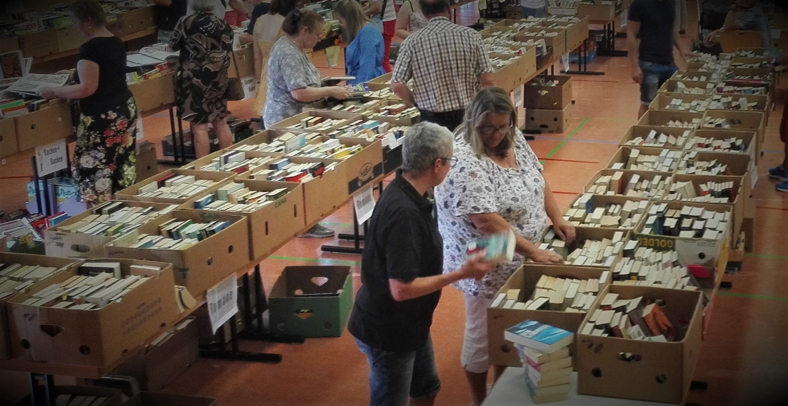

Großer Büchereiflohmarkt 2021
Lange haben wir geplant, gezittert und gehofft aber nun ist es soweit: Wir können unseren großen Flohmarkt in der Kämpfelbachhalle und auf dem Freigelände beim Parkplatz am Samstag 18. September und Sonntag 19. September 2021 veranstalten.
Samstags ist ab 15:00 Uhr Einlass und schließen werden wir um 20:00 Uhr und sonntags können Sie bei uns in der Zeit von 10:00 Uhr bis 17:00 Uhr in allen Medien stöbern.
 Eindruck vom Flohmarkt 2019 - Bild: Rainer Wessinger
Neben dem Angebot in der Halle, das wegen des Ausfalls im letzten Jahr noch größer ist als bisher,
bieten wir auch auf dem Freigelände (unten zwischen den Notausgängen) einen Teil unserer Medien
zum Verkauf an. In der Halle haben wir die Bücher nach Themen sortiert, separat Kinder- und
Jugendbücher, CDs, Spiele, einige DVDs und natürlich die Schatzkiste mit vielen bibliophilen oder
einfach interessanten Büchern aus älteren Zeiten. Im Freigelände finden sie bunt gemischt Bücher zum
durchstöbern.
Dort befindet sich auch unsere Kuchenstation, an der Überraschungs-Kuchenpakete erworben
werden können.
Schweren Herzens sahen wir uns jedoch gezwungen, keine Getränke anzubieten.
Corona-Informationen zum Ablauf:
(Stand der gesetzlichen Reglungen zum Redaktionsschluss. Durch die Conronaregelung für Baden-
Württemberg kann es zu weiteren Einschränkungen kommen, bitte entnehmen Sie die allgemein
gültigen Regelungen der Tagespresse)
- Bei der Veranstaltung gilt die 3G-Regelung, auch für den Aussenbereich Bitte bringen Sie einen entsprechenden Nachweis zu Kontrollzwecken mit! Ohne Nachweis kein Einlass. Ausnahme Kinder und Jugendliche von 0 bis 17 Jahren, Schüler ab 12 Jahren benötigen den Schulausweis als Ersatznachweis. (vgl. aktuelle Corona-Verordnung) Wir stellen sicher, dass auch das Personal diese Regelung einhält
- Maskenpflicht besteht auf dem gesamten Gelände
- Während der Veranstaltung bitten wir, den 1,5-Meter-Abstand einzuhalten, natürlich auch im Wartebereich vor dem Einlass, ebenso bitten wir die A-H-A Vorgaben zu beachten
- Ein Hygienekonzept ist erstellt und wird ausgehängt Eine Handdesinfektionsstation befindet sich am Halleneingang
- Wegen den Hygieneregelungen können wir keine Tragekörbe zur Verfügung stellen, bitte bringen Sie für den Einkauf und den Transport eigene Behältnisse mit
Und zum Schluss eine Bitte: Wir wollen möglichst vielen Gästen den Besuch des Markts ermöglichen.
Sie können uns dadurch unterstützen, dass Sie Ihren Besuch nicht unnötig in die Länge ziehen.
Trotz der vielen Regeln und Vorgaben wünschen wir Ihnen einen angenehmen Aufenthalt und viele
schöne Schnäppchen.
Wegen des Flohmarkts bleibt die Bücherei am Sonntag, den 19. September geschlossen.
Neue Kinderbücher
Die Ferien sind fast vorbei, aber der Lesehunger der Kinder ist hoffentlich geblieben. Da ist es sicher gut, dass wir neue Bücher, besonders solche für Kinder, in den letzten Wochen eingestellt haben. Auf dem Bild ist nur eine kleine Auswahl zu sehen aber es sind reichlich Neuheiten, auch dringend erwartete Fortsetzungen von Serien, verfügbar.
Bücherflohmarkt 2021
In nicht mehr ganz 2 Wochen startet der bereits lange ersehnte Bücherflohmarkt in der Kämpfelbachhalle Bilfingen. Weit über 800 Kisten mit Büchern aller Bereiche und weiteren Medien stehen bereit für den Verkauf. Zum Redaktionsschluss können wir wegen der sich laufend verändernden Vorgaben aufgrund von Corona noch nicht endgültig sagen, wie die Zutritts- und Aufenthaltsregeln beim Flohmarkt sein werden, aber in der nächsten Ausgabe des Gemeindeblatts werden wir Sie genauer informieren. Zumindest werden wir die 3G-Regelung mit entsprechenden Kontrollen von Nachweisen und eine Anwesenheitserfassung beachten müssen, die Details dazu müssen in dieser Woche noch festgelegt werden. Auf das beliebte Café müssen wir aus Hygienegründen verzichten, Überraschungs- Kuchenpakete werden aber zum Kauf angeboten, genauso wie Flaschen-Getränke. Auch planen wir, einen Teil unseres Angebots im Freien zu präsentieren, sofern es das Wetter zulässt. Kuchenspenden und Unterstützung bei Auf- und Abbau sind uns selbstverständlich auch weiterhin willkommen. Bei den Kuchenspenden müssen wir, so leid es uns selbst tut, bitten, auf Sahnekuchen zu verzichten. Uns steht durch die Paket-Bildung nicht die erforderliche Kühlkapazität zur Verfügung. Wenn Sie uns unterstützen wollen melden Sie sich bitte direkt in der Bücherei, telefonisch unter 07232/3134200 (AB) oder per email info@buecherei-bilfingen.de. Wegen des Bücherflohmarkts bleibt die Bücherei am 19. September geschlossen. Wir freuen uns auf Ihren Besuch beim Flohmarkt und in der Bücherei. Ihr Büchereiteam
3G-Nachweis erforderlich!
Für den Besuch der Büchereiräume müssen wir laut Corona-Verordnung des Landes einen 3G-Nachweis verlangen.
Bringen Sie bitte ihr Impf-Zertifikat (z.B. per Handy) oder Impfausweis oder Testnachweis mit.
Ausnahme: Die Rückgabe von Medien ist ohne 3D-Nachweis möglich.

Normaler Büchereibetrieb – überfällige Medien
Wir hatten an dieser Stelle schon mehrfach berichtet, dass wir zunächst eine kontaktlose Rückgabe
für Medien gestaltet haben und seit jüngster Zeit auch im Normalbetrieb weiter anbieten. Die
zurückgegeben Bücher bleiben dann für 2 Tage in Quarantäne, bevor sie zurück gebucht und
einsortiert werden.
Wegen dieser für alle ungefährlichen Rückgabemöglichkeit werden wir die
automatische Verlängerung überfälliger Medien einstellen. Wir bitten Sie deswegen noch im Juli alle
bis dahin fälligen Medien wieder zurückzugeben. Die mehrfache Verlängerung ist ab diesem Zeitpunkt
nur noch eingeschränkt möglich. Wir haben deswegen in der vergangenen Woche die Leser mit
Medien, die wir nicht mehr verlängern können, zur Information persönlich angeschrieben. Diese
„Mahnungen“ sind nur als Erinnerung gedacht und deswegen kostenfrei.
Ab August müssen wir jedoch Mahn-und Überziehungsgebühren verlangen. Dafür bitten wir um Ihr Verständnis.
Unsere Planungen für den am 17. bis 18. September stattfindenden Bücherflohmarkt sind diese
Woche deutlich konkreter geworden und erste Aktionen finden bereits statt. Mehr als 700 Kisten mit
gebrauchten aber vielfach hochwertigen Büchern sind bereits vorbereitet und warten auf ihren
Abtransport zum Flohmarkt.
Wenn Sie uns dabei unterstützen wollen können Sie sich gerne bei uns
direkt in der Bücherei, telefonisch unter 07232/3134200 (AB) oder per email info@buecherei-
bilfingen.de melden. Wir benötigen wegen der Menge jede helfende Hand, gerne auch stundenweise,
Samstags vormittags beim Aufbau und Sonntag abends zum Abbau.
Wir freuen uns auf Ihren Besuch und wünschen Ihnen Gesundheit.